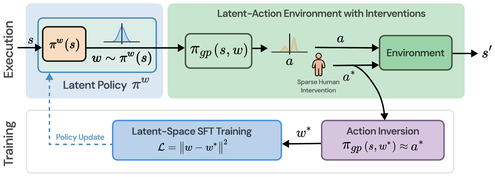
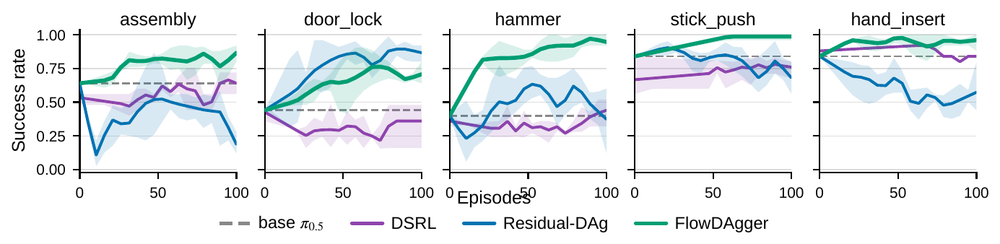
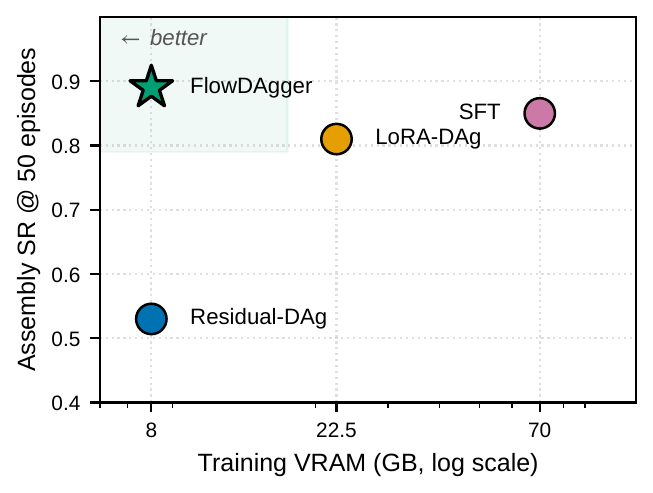

Pretrained generative robot policies based on flow matching and diffusion have achieved impressive results across a wide range of manipulation tasks. Yet real-world deployments routinely expose failure modes outside the pretraining distribution. Closing these gaps typically requires large-scale data collection or online reinforcement learning on physical hardware, which is impractical for rapid and safe adaptation. We present FlowDAgger, a sample- and compute-efficient method for adapting frozen generative robot policies from human interventions in latent space. Our key idea is action inversion: each human expert action is mapped to the noise that would have produced it under the frozen base policy, using reverse-time integration followed by local refinement. The resulting inverted noise provides supervision for a lightweight latent policy that steers the base model at deployment time, enabling rapid skill acquisition while preserving its behavioral priors. We evaluate FlowDAgger in simulation and on real-world bimanual and single-arm manipulation, adapting both action-head VLAs and world-action models from a handful of interventions. FlowDAgger outperforms supervised fine-tuning and latent-space RL baselines and preserves pretrained skills on held-out tasks, offering a practical path for adapting robot foundation models in the real world.
Highlights

FlowDAgger adapts a frozen generative policy from a stream of human corrections. A small latent policy πw proposes a noise vector for each observation, which the frozen base policy πgp decodes into an action; a human operator overrides that action whenever the behavior is unsatisfactory. The core step, action inversion, recovers the noise vector w* that reproduces each correction under the frozen base policy (πgp(s, w*) ≈ a*), turning an action-space correction into a target in noise space. The latent policy is then trained by regression onto these (s, w*) targets. Because the base policy is never fine-tuned, FlowDAgger steers it toward the corrected behavior while preserving its pretrained skills.
On MetaWorld, FlowDAgger reaches higher success rates than supervised fine-tuning, action- and weight-space DAgger, and latent-space RL, from the same handful of corrections and at a fraction of the training memory.

Success rate vs. adaptation episodes adapting a frozen π0.5 on five MetaWorld tasks. FlowDAgger (green) climbs fastest and highest, while Residual-DAgger (blue) learns erratically and DSRL (purple) barely moves the base (dashed). Mean over 3 seeds.
| Task | Base | SFT | LoRA-DAgger | Residual-DAgger | DSRL | FlowDAgger |
|---|---|---|---|---|---|---|
| Assembly | 0.64 | 0.85 | 0.81 | 0.53 | 0.64 | 0.89 |
| Bin Picking | 0.56 | 0.76 | 0.68 | 0.63 | 0.76 | 0.69 |
| Box Close | 0.36 | 0.70 | 0.52 | 0.69 | 0.48 | 0.59 |
| Coffee Pull | 0.84 | 0.96 | 0.68 | 0.95 | 0.84 | 1.00 |
| Dial Turn | 0.20 | 0.64 | 0.88 | 0.59 | 0.43 | 0.75 |
| Door Lock | 0.44 | 0.48 | 0.76 | 0.85 | 0.28 | 0.75 |
| Hammer | 0.40 | 0.80 | 0.68 | 0.56 | 0.27 | 0.84 |
| Hand Insert | 0.84 | 0.88 | 0.72 | 0.71 | 0.92 | 0.99 |
| Lever Pull | 0.28 | 0.44 | 0.52 | 0.37 | 0.35 | 0.61 |
| Pick Place | 0.76 | 0.80 | 0.68 | 0.71 | 0.60 | 0.85 |
| Soccer | 0.24 | 0.36 | 0.32 | 0.28 | 0.33 | 0.44 |
| Stick Push | 0.84 | 0.84 | 0.92 | 0.84 | 0.73 | 1.00 |
| Mean SR | 0.53 | 0.71 | 0.68 | 0.64 | 0.55 | 0.78 |
| Δ vs. Base | — | +0.18 | +0.15 | +0.11 | +0.02 | +0.25 |
Twelve MetaWorld tasks with π0.5 as the base policy. FlowDAgger gives the largest mean improvement over the frozen base (+0.25) and wins on eight of twelve tasks. Best non-base method per row in bold.

Because only a small noise policy is trained, adaptation fits in the ≈8 GB that deploying π0.5 already requires — a single consumer GPU — while weight-space baselines need far more.
| Task | π0.5 (VLA) | Cosmos-Policy (WAM) | ||||
|---|---|---|---|---|---|---|
| Base | FD | Δ | Base | FD | Δ | |
| Assembly | 0.64 | 0.89 | +0.25 | 0.52 | 0.92 | +0.40 |
| Bin Picking | 0.56 | 0.69 | +0.13 | 0.28 | 0.44 | +0.16 |
| Box Close | 0.36 | 0.59 | +0.23 | 0.36 | 0.64 | +0.28 |
| Dial Turn | 0.20 | 0.75 | +0.55 | 0.44 | 0.68 | +0.24 |
| Hand Insert | 0.84 | 0.99 | +0.15 | 0.76 | 0.88 | +0.12 |
| Lever Pull | 0.28 | 0.61 | +0.33 | 0.56 | 0.64 | +0.08 |
| Stick Push | 0.84 | 1.00 | +0.16 | 0.76 | 0.96 | +0.20 |
| Mean | 0.53 | 0.79 | +0.26 | 0.53 | 0.74 | +0.21 |
The same noise-space procedure adapts an action-head VLA and a world-action model (whose actions are slices of a joint latent), with gains of comparable magnitude on both.
| Method | In-dist | Held-out (saturated) tasks | ||||||
|---|---|---|---|---|---|---|---|---|
| Hammer | Door | Drawer | Faucet | Plate | Push | Mean | Δ base | |
| Base π0.5 | 0.40 | 1.00 | 1.00 | 0.96 | 0.88 | 0.96 | 0.96 | — |
| FlowDAgger | 0.84 | 0.88 | 1.00 | 0.96 | 1.00 | 0.56 | 0.88 | −0.08 |
| Residual-DAgger | 0.56 | 0.88 | 0.68 | 0.80 | 1.00 | 0.08 | 0.69 | −0.27 |
| LoRA-DAgger | 0.68 | 0.80 | 0.00 | 0.36 | 0.00 | 0.36 | 0.30 | −0.66 |
| SFT (50 demos) | 0.80 | 0.12 | 0.00 | 0.00 | 0.00 | 0.00 | 0.02 | −0.94 |
Adapting on Hammer, then evaluating on five tasks the base near-saturates. FlowDAgger gains the most in-distribution while holding the held-out tasks closest to the frozen base; weight-space fine-tuning collapses them. Bold: held-out scores within base noise or above.
On real-world bimanual manipulation, FlowDAgger adapts a frozen base policy from a handful of human corrections, turning consistent failures into reliable task completion. Clips shown at 3× speed.
| Task | Base | SFT | FlowDAgger (Δ) | Episodes |
|---|---|---|---|---|
| Block Pick | 0.73 | 0.80 | 0.90 (+0.17) | 5 |
| Glassware Stacking | 0.26 | 0.53 | 0.76 (+0.50) | 5 |
| Button Push | 0.60 | 0.73 | 0.73 (+0.13) | 10 |
| Slider | 0.36 | 0.43 | 0.66 (+0.30) | 5 |
| Wire Pull | 0.40 | 0.53 | 0.70 (+0.30) | 10 |
| Jenga Stacking | 0.76 | 0.90 | 0.86 (+0.10) | 5 |
| Toolbox Packing | 0.13 | 0.63 | 0.80 (+0.67) | 10 |
| Plug Insertion | 0.60 | 0.66 | 0.72 (+0.12) | 20 |
Real-hardware success over 30 rollouts on two bimanual platforms (FR3 Duo and Dual UR5e). A handful of corrections (5–20 episodes) improves the frozen base on every task, with the largest gains where the base is weakest. Best non-base per row in bold. Videos for three of these tasks are shown below.
The base policy fails to reliably seat tools and close the lid.
π0.5 base policy (50 demos)
π0.5 + FlowDAgger (50 demos + 10 corrections)
The base policy fails to place both glasses onto their target mats.
π0.5 base policy (30 demos)
π0.5 + FlowDAgger (30 demos + 5 correction episodes)
The base policy fails to insert the plug into the power strip.
π0.5 base policy (100 demos)
π0.5 + FlowDAgger (100 demos + 20 correction episodes)